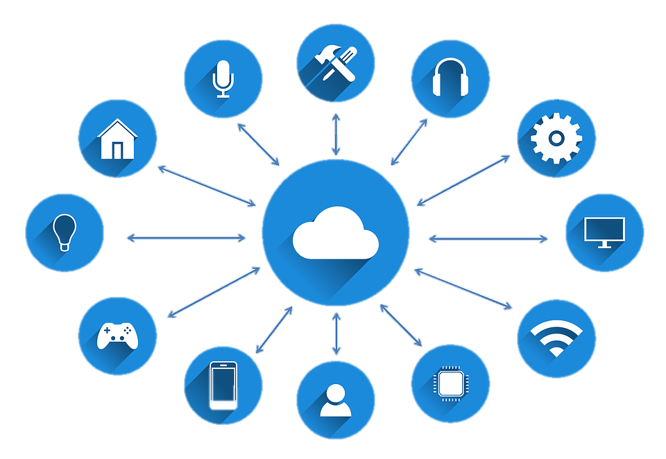

wifi 6IEEE 802.11ax (también conocido como WiFi 6) es un tipo de WLAN en el conjunto IEEE 802.11 de tipos de WLAN. IEEE 802.11ax está diseñado para operar en los espectros ya existentes de 2.4 GHz y 5 GHz. Además de utilizar MIMO y MU-MIMO, la nueva modificación introduce OFDMA para mejorar la eficiencia espectral global, y soporte de modulación 1024-QAM de orden superior para un mayor rendimiento. Aunque la velocidad nominal de datos es solo un 37% más alta que IEEE 802.11ac, se espera que la nueva enmienda logre un aumento de 4x6 en el rendimiento del usuario debido a una utilización del espectro más eficiente con un menor consumo de energía. |

I-O-TEl internet de las cosas (en inglés, Internet of things, abreviado IoT; IdC, por sus siglas en español) es un concepto que se refiere a una interconexión digital de objetos cotidianos con internet. Es, en definitiva, la conexión de internet más con objetos que con personas. También se suele conocer como internet de todas las cosas o internet en las cosas. |
I-O-TEl internet de las cosas (en inglés, Internet of things, abreviado IoT; IdC, por sus siglas en español) es un concepto que se refiere a una interconexión digital de objetos cotidianos con internet. Es, en definitiva, la conexión de internet más con objetos que con personas. También se suele conocer como internet de todas las cosas o internet en las cosas. |
I-O-TEl internet de las cosas (en inglés, Internet of things, abreviado IoT; IdC, por sus siglas en español) es un concepto que se refiere a una interconexión digital de objetos cotidianos con internet. Es, en definitiva, la conexión de internet más con objetos que con personas. También se suele conocer como internet de todas las cosas o internet en las cosas. |
Indice de contenidos
- 1. introducción
- 2. costo
- 3. expositores